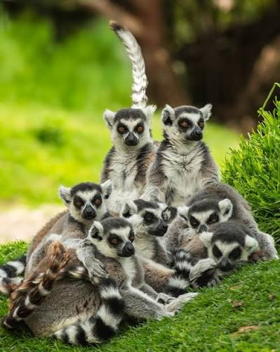

Los lémures son primates estrepsirrinos (con nariz húmeda y hocico alargado) endémicos de la isla de Madagascar. Características principales • Origen: Viven de forma natural únicamente en Madagascar y pequeñas islas cercanas. • Variedad de especies: Existen más de 100 especies reconocidas. • Tamaño y peso: Son muy diversos; el más pequeño es el lémur ratón (pesa unos 30 gramos) y el más grande es el indri o el sifaka (pueden pesar hasta 9 o 10 kg). • Estructura social: En la gran mayoría de las especies, las hembras son dominantes sobre los machos. • Dieta: Son omnívoros; se alimentan principalmente de frutas, hojas, flores, néctar e insectos. • Comunicación: Utilizan fuertes vocalizaciones —que inspiraron su nombre, derivado de los lemures (fantasmas) de la mitología romana— y comunicación olfativa mediante marcas de olor.